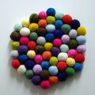
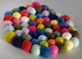

|
||
Premium Patterns Wintry Mix Mitts Love Bytes HawkeyeFree Patterns Kiddie Cadet Summerlin Ruffled Scarf Seamless DS Sock Simply Seamless Pouch Myriads of MushroomsExtras DIY Mitten Blocker Felt Patch Tutorial Yarn Dyeing Tutorial Needle Pouches Knitting Journal |
March 30, 2010 - Posted by Alice Schnebly61 BallsProject Specs  I'm excited to show you a little project that has been slowly progressing all month long. I've been knitting these little balls here and there for the last few weeks, and yesterday I finally was able to put them together into something. I'm not quite sure what purpose this mat serves, but I've had fun trying to find uses for it. Even just looking at it with all the pretty colors makes me happy! I was inspired by many projects I've seen online that use felt balls. Since I'm much better at knitting than I am at needle or wet felting, I decided to try my hand recreating the look by knitting. After I found a knitted ball pattern, I used it to make a few different sized balls. I finally landed on a size I liked after modifying the pattern. After felting, the balls end up about 1 1/4" in diameter, which was the perfect size for this project. I started the Oh Balls! pattern as called for (but went up a needle size to US8), and worked until I had 24 stitches (Round 5), followed by 3 plain knit rounds. I skipped to Round 21 for the decreases and finished the pattern from that point, stuffing my ball lightly with polyfil when I had 12 stitches left. To felt the balls I put them all in a zippered pillowcase and fulled them for a cycle in my washing machine. After that, I felted each ball for about a minute by hand to make sure they were felted evenly and stayed spherical. Finally, I put them in the dryer for about five minutes which tightened them up a bit more and helped them dry. I used extra durable fishing line to attach the balls to each other. I liked that I was able to pull on it as much as I needed without the threat of it breaking. In total my project used 61 balls in 22 different colors of Malabrigo Worsted. Each ball uses just over six yards of yarn, so they really are great for those last bits of yarn you might have around. You can also easily mix any worsted weight feltable yarn you have (I know I have lots of scraps of Cascade 220 and Patons around too!). The balls don't take long to knit, but it does get a little old after awhile. I would suggest knitting up a few each time you finish a project with the leftovers and saving them until the end of the year when you've built up loads of them. It would be fun to make a garland for Christmas, or even a rug if you're really ambitious! |
   Recent ReviewsRecent Posts
 Our Favorites
|
| © 2007 KathrynIvy.com | ||
{kind=link}
{kind=link}
{kind=link}